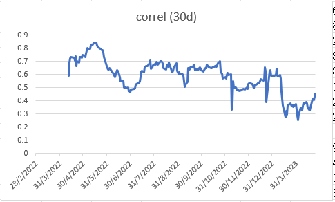
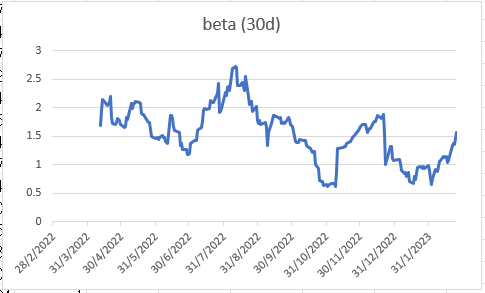
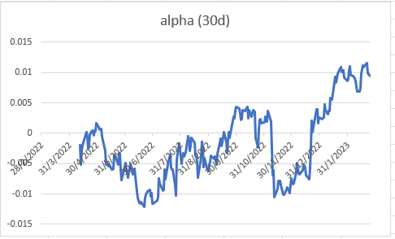
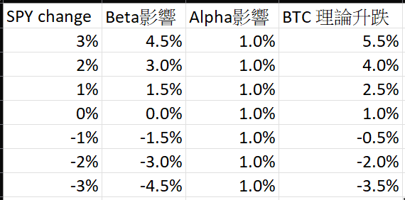

於2022年熊市時，很多人都在笑說加密貨幣是另類資產、抗通漲的人，因為他們看到加密貨幣於股市大跌時也是不堪一擊，在高通漲環境下也是節節敗退。我不會說加密貨幣下跌與宏觀，與股市無關，但我會說，宏觀及美股只是其中一些因子，主導加密貨幣因子仍然是其他crypto-related的東西，如減半因素、資金流、鏈上數據、市場情緒等等。
回看2014年、2018年，都是加密貨幣大跌年，這兩年美股有大跌嗎？2014沒有，2018有。
這兩年通漲很嚴重嗎？2014及2018皆沒有。
相反，這兩年是減半的後兩年嗎？2014及2018都是。
意思即無論市場是如何，無論有否嚴重通漲，基於減半周期，加密貨幣於2022也是該跌的。
上述這個過程就與Backtest非常類近，即回看歷史數據，看看有哪些因子對價格有直接影響，有哪些因子對價格無影響，然後就會令我們明白，如果要交易，要預測價格，該看哪些因子。
比特幣是另類資產嗎？絕對是。怎樣定義另類資產？那先看主要資產是甚麼。當然是股債。與股債相關性低的，就可以算是另類資產。
比特幣與股市過往n年一向擁有低相關性，30天相關性大約低於0.5，純粹2022年的相關性高於0.5。純粹一年的數字 (n=1) 高於0.5，能否可以成為證據，證明加密貨幣不是個好的分散投資工具呢？不合理。
美股於2022年下跌完全是我意料之中（不妨看看所有舊文章及專欄，2021年就開始唱淡2022美股）；而加密貨幣於2022年下跌，則是因為減半後2年。所以，剛好兩者於同一時期下跌，狹路相逢，令兩者的相關性無意間被推高了。當然，美股對加密貨幣價格是有影響的，但我認為不是主要因子。
意即加密貨幣於2022後絕有機會與美股脫離關係，或者與美股走勢迵異。數字上如何證明呢？那就看看相關性吧！英文為correlation，代號為小階r，由-1至1不等。負數即反向相關，正數即正向相關，0即無關。
請看下圖，為SPY與BTC的30天rolling correlation。

會發現，2022年correlation大部分時間在0.5以上，即正向相關，而且相關性不低。不過，自2023年開始，correlation大跌，由0.6跌至0.3，即相關性大大減弱。這就是我在過去3個月於大部分直播節目中，不斷提及即將出現的脫鈎現象。
此外，除了看correlation外，亦可以看看beta。有炒開股的朋友一定不會感到陌生。Beta中文為貝塔值，或啤打系數，即兩者間的相對波動。例如美股升1%，Tesla升3%；美股跌1%，Tesla跌3%，那Tesla beta就大約是3。大家知道BTC的beta是多少嗎？
請看下圖，顯示了BTC的beta。

數字為1至2左右。的而且確BTC比美股波動，不過沒想像中誇張，大約為1至2倍。執筆時大約1.5倍，即美股升1%時，BTC理應升1.5%。
除了beta外，還有alpha。Alpha即excess return，即額外回報，即真正跑贏的部分。假設某資產beta為1，alpha是+1%。即大市升1%，這資產會升2%（beta部分貢獻1%升幅，alpha部分也貢獻1%升幅）；而大市跌1%，這資產會不變（beta部分應跌1%，但alpha部分則貢獻1%升幅）。
return = market return x beta + alpha
BTC alpha是多少？這看下圖。

結果顯示，2022年BTC alpha長期在-1%至+0.5%上下徘徊，即沒有跑贏美股，也沒有明顯跑輸。但2023開局後，alpha直衝至0.01，即每天不論美股升跌，BTC自身也有1%的alpha。
假設未來時間BTC beta照舊1.5，alpha照舊1%，情況如下：

所以：
1. 2022年兩者高相關性不代表BTC不是個好的分散工具，也不代表BTC不是另類資產
2. 2023年兩者相關性開始下降
3. BTC beta沒想像中大，只有1-2倍
4. BTC今年明顯跑贏美股